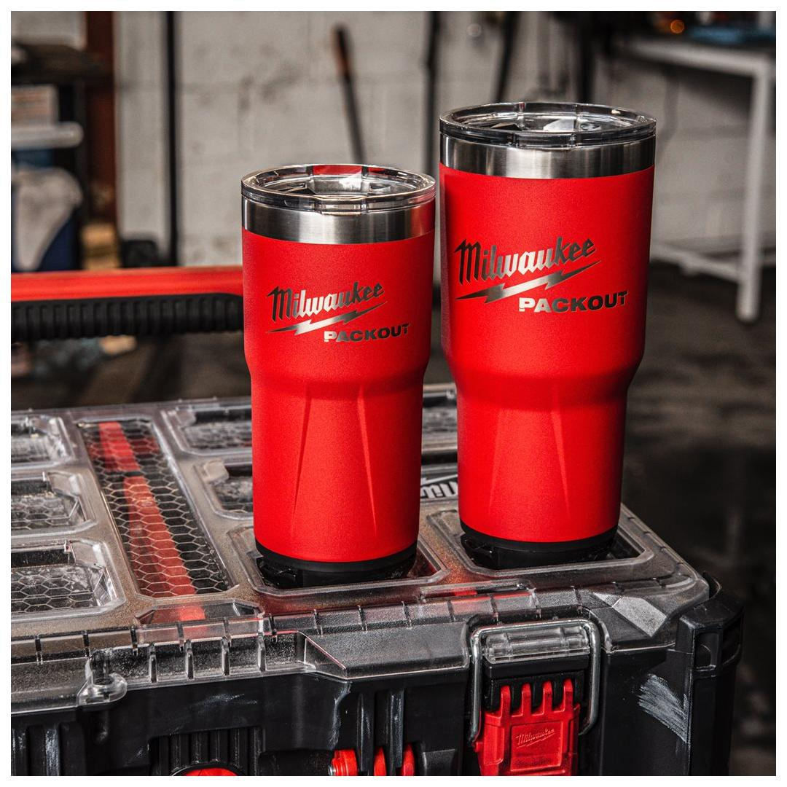
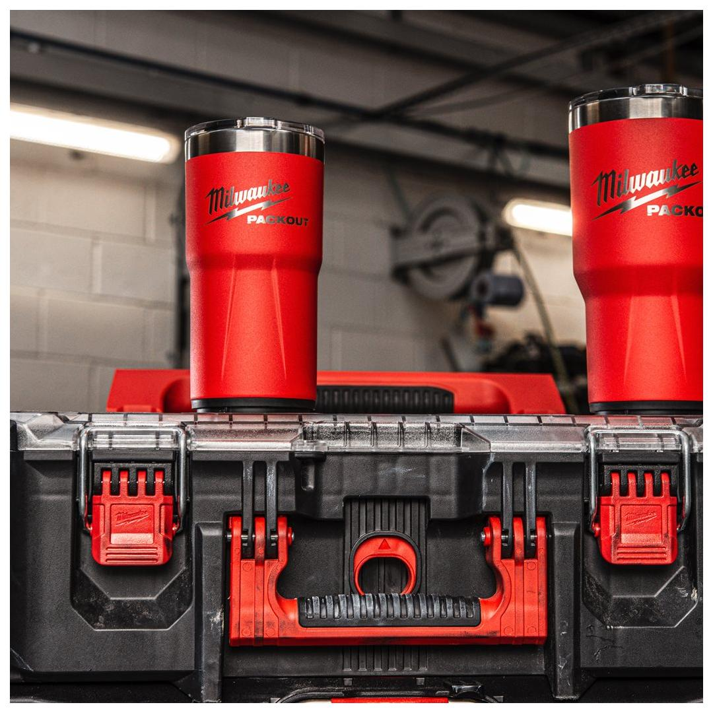
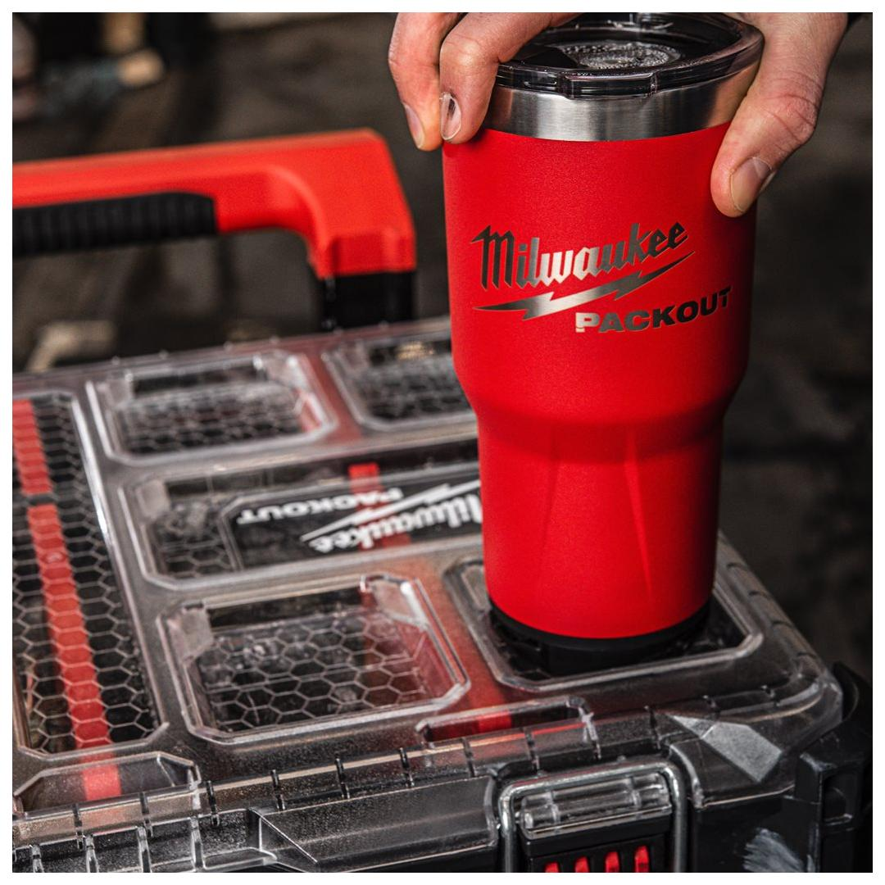
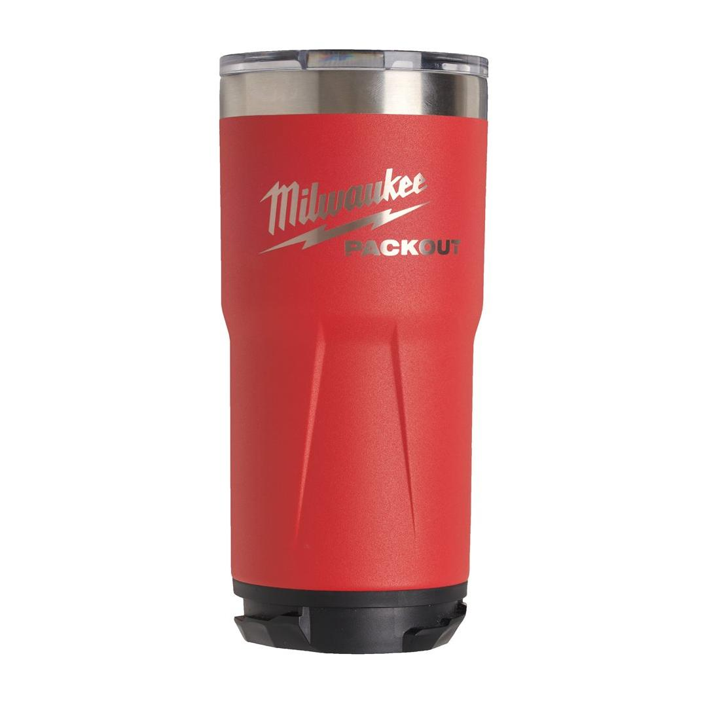
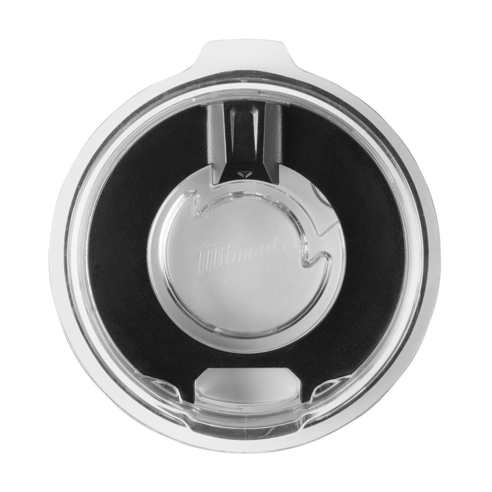
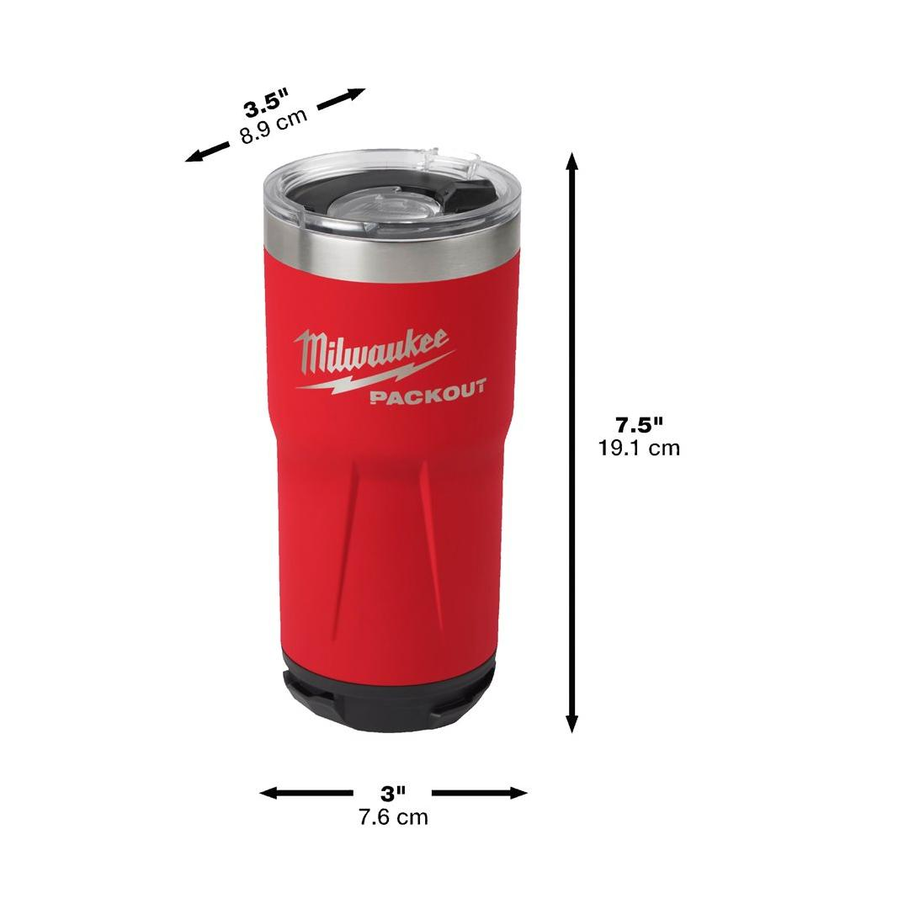

Milwaukee | Packout Tumbler 591 ml Red
4932479074







Features
- Double wall vacuum insulation for all day hot & cold retention.
- Rotating magnetic closure for easy opening.
- 18/8 stainless steel for durability.
- Dishwasher safe.
- Twist and lock mechanism for connectivity with all PACKOUT™ components.
Information
| MOQ | 6 |
| Pack quantity | 1 |
| Packaging [inner|master] | 6 |